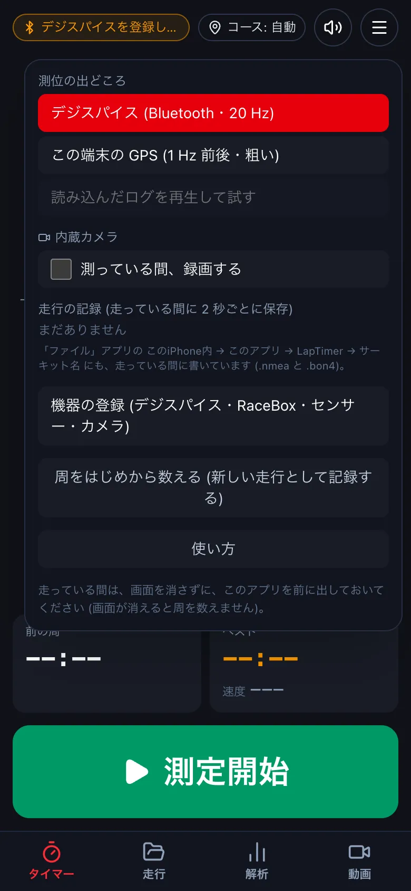
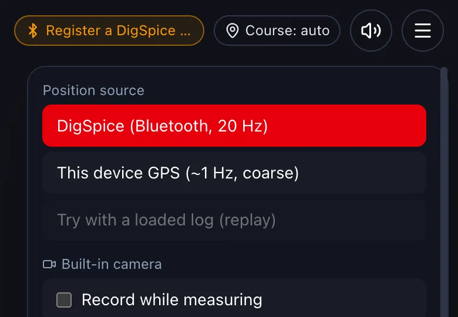

内蔵カメラ・GoPro で一緒に撮るRecording with the camera or a GoPro
測っている間、スマートフォンのカメラか GoPro で車載動画を撮れます。動画は走行と同じフォルダに入り、時刻が自動で合います。While timing, record onboard video with the phone camera or a GoPro. The video goes into the run's folder and is synced automatically.
-
タイマーの右上の ≡ を押し、内蔵カメラ の 測っている間、録画する に印を付けます。測定開始 で録画が始まり、測定終了 で止まります。On the timer, tap ≡ (top right) and tick Record while measuring under Built-in camera. Recording starts with Start and stops with Stop.


- GoPro は、設定 → 機器 の カメラ で登録します。測っている間、車が動き出すと録画を始め、周ごとに印を付け、測定を終えると止めます。Register a GoPro under Settings → Devices → Cameras. While timing it starts recording when the car moves, marks each lap, and stops when you finish.
この操作は、iPhone・Android のアプリだけです (デスクトップ版・ブラウザ版にはありません)。上で iPhone か Android を選ぶと手順が出ます。This is only in the iPhone and Android apps (not in the desktop app or the browser version). Choose iPhone or Android above to see the steps.